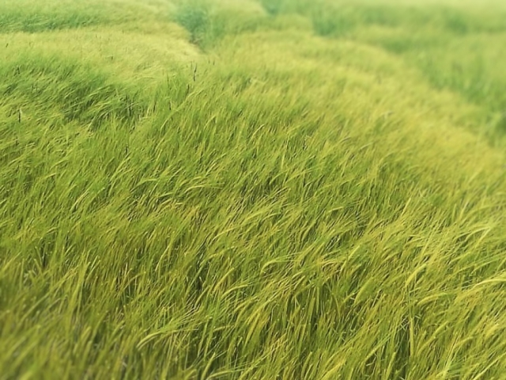
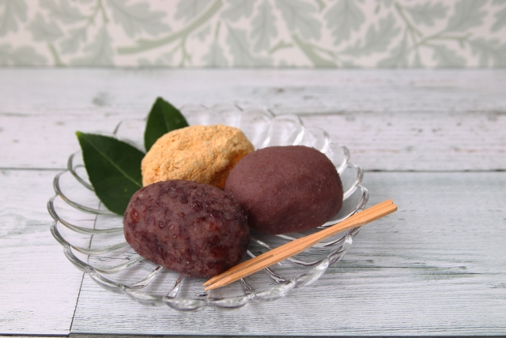
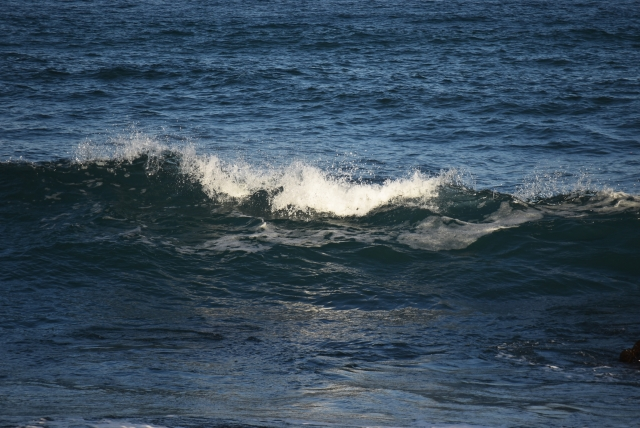
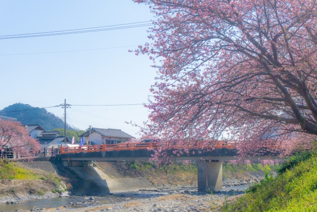
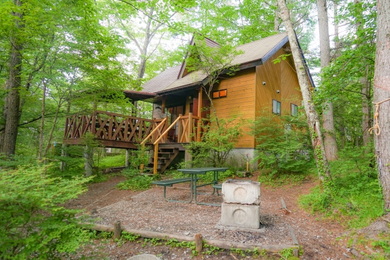
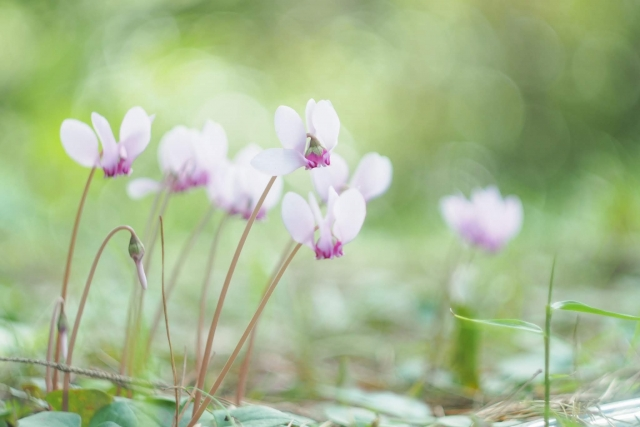
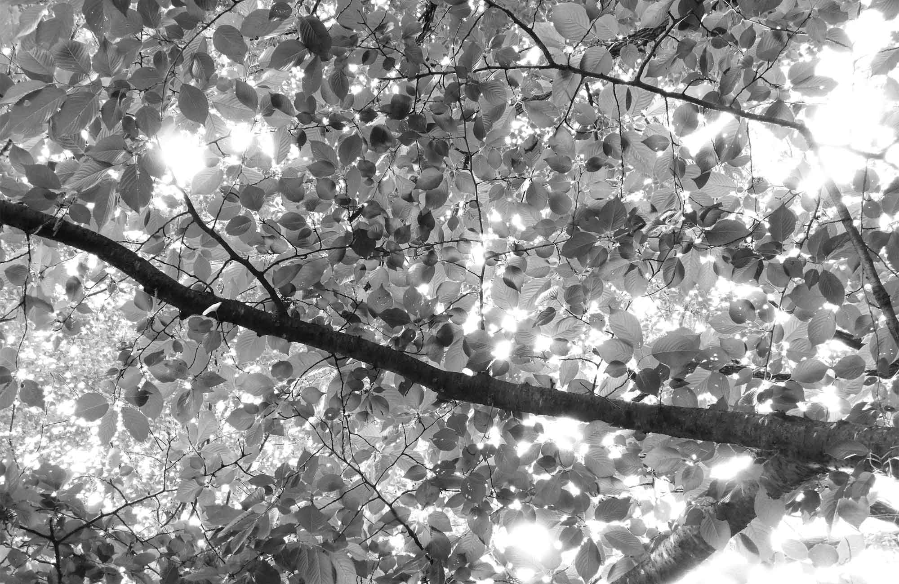
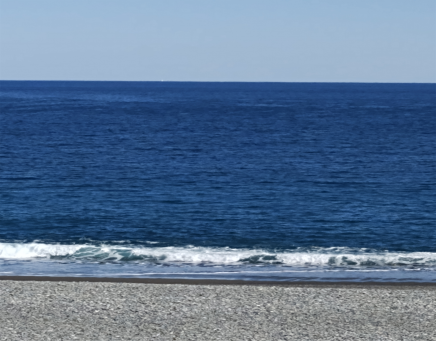
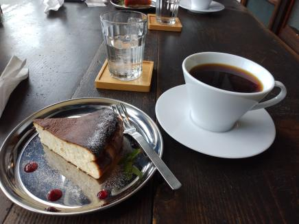

ANTHOLOGYアルバム・シングル情報
- 2023/09/06

みのりの稲をなぎ倒し吹き荒れる風、風神に雷神、すべては神の仕業、深く頭を垂れて畏まり捧げた祈り...すべては無駄だったのか、はたまた、これくらいで許されたのか、恐れ入るべし。「神は祟るもの、故に仏を拝む」とはよく言ったもの、「これくらいで済んで良かった...」、嗚呼、なんと人は健気な存在なのか。
- 迷走の 果てに悟りし 野分かな -- 2023/03/18

今年のお彼岸は３月21日（春分の日！）、復活祭（春分の日の後の満月の日の後の日曜日！！）は４月９日、どちらも本格的な春の訪れに喜びを感じる普遍性を季節の行事としたものだ。イースターの色付き卵は知ってたけど染卵という日本語があるのは知らなかったし、ぼた餅はボタッとした餡ころ餅だからそう呼ばれると思ってた...。
- 春光や 染卵より ぼたん餅 -- 2023/03/11

波濤とくれば、やはり東山魁夷かな、特に見る者を圧倒する「濤声」、デカイからね。鑑真に捧げるべく冬の日本海を描いたものだが、穏やかな初春、まだ冬の色を残した熊野灘のうねりも見る者を誘う、それは、季節の移り変わりを告げながらもなお人を拒み、遥か沖の水平線の青からエメラルドグリーンへ変化し、そして、盛り上がり白く散る。
- 山となり 崩れる春の 波濤かな -- 2023/03/03

三寒四温とはよく言ったもの、寒が戻り、戻るたびに暖かくなり、鉄橋のそばを満開の薄紅色が駆け寄り飛び去った。梅にしてはピンクが濃いい、サクラ？、もちろんいわゆるソメイヨシノじゃない、それは江戸時代に生まれ全国に広まった。今は旧暦の一月の末、そう、いにしへの大和人にとっては、新年とは桜の咲く春、新春だったのだ。
- 車窓より 河津桜の スペクトル -- 2023/01/06

1月の凛とした冷たさはどこから来るのか。ブルっと震え、ピリッとした風がひんやりとしたほの赤い頬を掠め吹き抜ける。その先には斧で薪を割く音がリズムを刻み、視線が流れの先にガラス窓を通して中の仄かな暖かさを見る。白いレースのカーテンの奥の団欒のひと時のその瞬間を包むキリッとしたその冷たさ。
- 熊野路の 森のパン屋の 暖炉の火 -- 2022/12/16

12月となり本格的な寒さがやってきた。暖かく汗ばむ日もあった１１月は遠くへ去り、寒さに震えながらも確かに冬がきたことに安堵の気持ちを覚える。気がつけば冬至が一週間後に迫り、昼の短さを実感する。冬至がすぎればクリスマス。喜びとともに北半球は春に向かって胸を張り頭 を垂れる。
- シクラメンのかほり 陽だまりのバッタ -- 2022/03/11
 なんともはや、やっかいな。やっかいなことは日々のいとなみ。空を仰ぎ地を見つめ、ホッと一息つく間もないって、ボソっと息を吐いてはため息を繰り返す。けど、厄介なやっかいなと言いながら、表情は晴ればれと、歩く姿はカクシャクと、東の海原に満月のきらめき、西の山の端には薄っすらと入日の青みがかったクラブピンク。
なんともはや、やっかいな。やっかいなことは日々のいとなみ。空を仰ぎ地を見つめ、ホッと一息つく間もないって、ボソっと息を吐いてはため息を繰り返す。けど、厄介なやっかいなと言いながら、表情は晴ればれと、歩く姿はカクシャクと、東の海原に満月のきらめき、西の山の端には薄っすらと入日の青みがかったクラブピンク。
- 山深く 小川せせらぎ 入彼岸 -- 2022/03/08

どうしてだろうという思いとなんでなのという嘆きが、怒涛のように打ち寄せては引いていく。この理不尽さと不条理さをどうすることもできない人の歴史がまた繰り返された。その目はあの日にも見た瞳で、光と陰がどうしようもなく入り組んで、なぜ私なのと何かを訴えていた。そして今、冬が終わりまた春が来る。
- うららけし 天を切り裂く 戦闘機 -- 2022/03/03
- 今年も受験の季節が訪れ、そして過ぎていく。この２年間の手探りが、いや特にこの１年間の営みが、何かひとつの世界の見方の端緒を連れてきたか。それがある表現として他人に伝わったか。限界のその向こうを垣間見た時に感じるあの感じを、あなたも味わったか。さあ、ひとしきり泣いた後は、顔を上げて自らを誇れ。
- 春雷よ 去りてこそ知れ 藍の空 - - 2022/02/28

風のないある日の午後、空の青と海の青の出会うところに地球の輪郭があった。宇宙ステーションから見たのと同じ、いや、よりくっきりしたうっすらとした曲線。海の穏やかさは同じはずなのに、秋の海は春の海よりも哀しい。もちろん、背景音楽はガーガルジュ作曲「ヴァイオリンソナタ18番ト短調」、げにひたぶるに身にしみてうら哀し。
- 天高し 空の旅人の その行方 -- 2022/02/26
- 熊野の地を走るこちらがミライース、ダイハツね。スズキのアルトと迷ったんだけど、赤のアルトも捨てがたかったんだけど、結局、シルバーのミラe:s。軽の王道だよね、この形、かつて商用車タイプのミラがあって、後部座席とか本当に取ってつけたようで、でも、あれでいいんだよね。たかだか、時速35マイルで走るだけなら...。
- 蜜柑の香 熊野路をゆく ミライース - - 2022/02/24

ケーキセットをひとつ、まよったらチーズケーキにブレンドコーヒーかな。速玉大社の参道の大鳥居のその前の二階の隅のテーブルで一息。熊野街道の海風に吹かれてひとっ走りの後のひととき、奥のソファでは、明るい茶色のメッシュの髪を斜めに散らせて女性がひとり、主のようにくつろいで本を、読んでいた。
- 木枯らしや 熊野の杜の 鹿威し -
{kind=link}
{kind=link}
{kind=link}
{kind=link}
{kind=link}
{kind=link}
{kind=link}
{kind=link}
{kind=link}
{kind=link}
{kind=link}